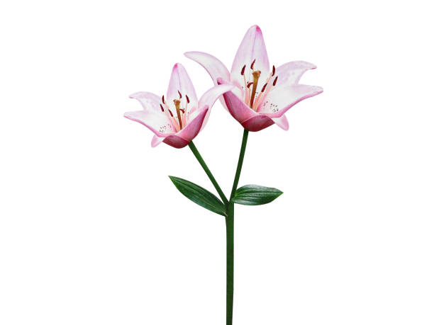

Çiçekler, bitki krallığının en renkli ve çeşitli üyeleridir. Milyonlarca yıllık bir evrim sürecinde, doğanın en güzel eserlerinden biri haline gelmişlerdir. İşte bazı popüler çiçek türleri :
Güller, dünyanın en popüler çiçeklerinden biridir ve aşkın, güzelliğin ve zarafetin sembolü olarak kabul edilir.
Tarihçesi binlerce yıl öncesine dayanır ve antik Mısır, Yunan ve Roma uygarlıklarında da yetiştirildiği bilinmektedir.
Gülün farklı renkleri, farklı anlamlar taşır. Örneğin, kırmızı gül aşkı, beyaz gül saflığı ve sarı gül arkadaşlığı simgeler.

Laleler, özellikle Hollanda ile özdeşleşmiş olsa da, aslında Orta Asya kökenlidir.
Osmanlı İmparatorluğu döneminde "Lale Devri" olarak bilinen bir dönemde büyük bir popülerlik kazanmıştır.
17.yüzyılda Hollanda'da "Lale Çılgınlığı" olarak bilinen bir dönemde, lale soğanları çok yüksek fiyatlara alınıp satılmıştır.
Orkideler, dünyanın en çeşitli çiçek ailelerinden biridir ve binlerce farklı türü bulunur.
Tropikal bölgelerde yaygın olarak yetişirler ve zarif görünümleriyle dikkat çekerler.
Bazı orkide türleri, vanilya gibi değerli aromatik maddelerin kaynağıdır.

Papatyalar, masumiyetin, saflığın ve sadeliğin sembolü olarak kabul edilir.
Dünya genelinde yaygın olarak yetişirler ve özellikle kırsal alanlarda sıkça görülürler.
Papatyaların tıbbi özellikleri de vardır ve bazı kültürlerde geleneksel tıpta kullanılırlar.

Zambaklar, zarafetin, saflığın ve yeniden doğuşun sembolü olarak kabul edilir.
Birçok farklı türü bulunan zambaklar, dünyanın çeşitli bölgelerinde yetişir.
Özellikle cenaze törenlerinde ve dini ritüellerde sıkça kullanılırlar.
